What is Tierra Finlandia?
Tierra Finlandia produces clay biodegradable urns. The company's values are sustainability and locally sourcing, empathy, spirituality, and uniqueness (customization).
Project Background
The Context
This is the company project from Aalto Summer Program (ITP - SED Track).
A little glimpse into the funeral industry in finland:
- Funeral services are rigid, emotionally distant, and disempowering. Current services provide only the bare minimum instead of what customers really want and need.
- Customers are ill-informed about what happens after the event.
Team
Camilla Mascher, Paige Nguyen, Hung Cho Yan
My Role
- Equal participation in desk research, interview, workshop, and service concept ideation.
- Special focus on finalizing business concept, business plan, and general project management
The Goal
Create an innovative business concept proposal to reimagine the funeral industry
The Challenges
- A sensitive and personal topic to approach users and potential customers
- Difficulty in measuring the result from driving cultural change
- Unclear public interest and broad potential customer target
- Unfamiliar topic with little previous knowledge from the team
Research
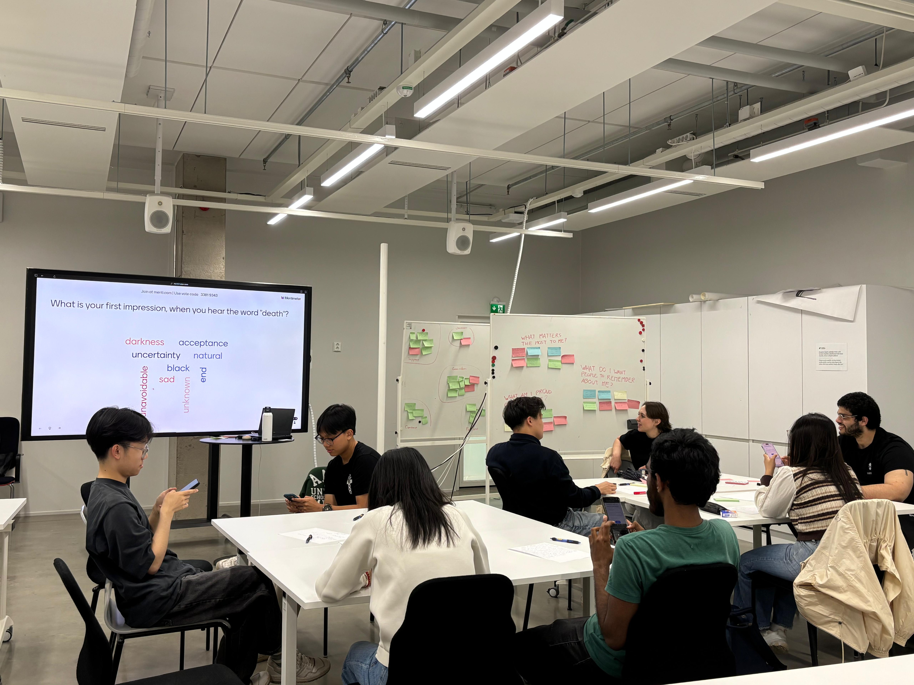
Research Goals
Since we were given a very broad brief without previous knowledge, we had to do a lot of research up hand.
- To understand public interest on topic
- Core components which can have an effect on how people perceive death
- People's value on death and approaching end-of-life
- How do people cope with grief?
Findings
- Families carry both emotional and practical burdens, often unprepared.
- Death is taboo, but people open up when gently guided.
- Existing services are efficient but lack emotional support.
- People want to be remembered through stories, not traditions.
Ideation
Concept Ideas
After a ideating session using SCAMPER, Crazy 8, Six Possible Idea, and HMW, we came up with some initial ideas
Solution Concept
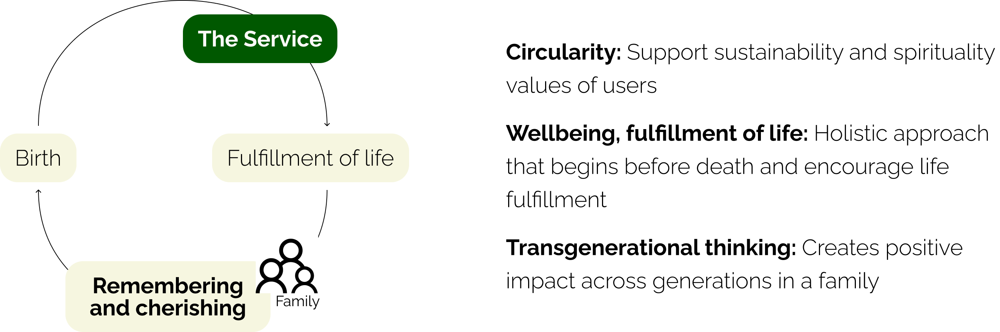
Final Concept
- Hybrid subscription with toolkits and a digital platform to support reflection, goals, and life celebration.
- Memory capturing and artifact creation, from reflections to photobooks and films.
- Flexible use: self-guided, community sharing, or with family involvement.
- A life coach marketplace that connects users with certified coaches for personalized guidance.
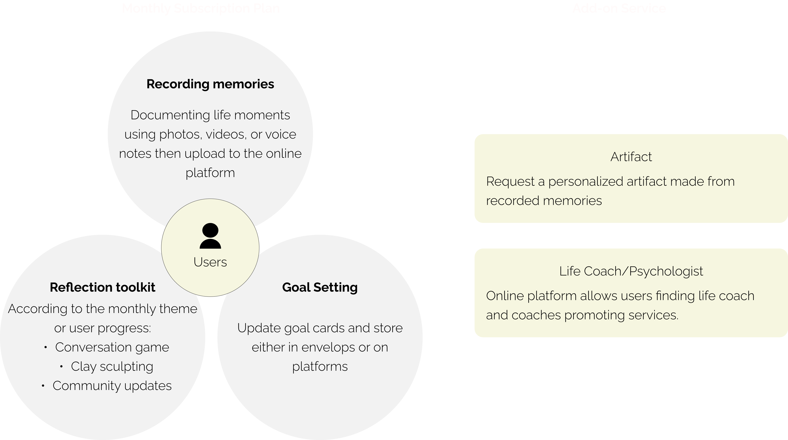
Reflection
Better structure dynamic and project management
Since we had a very big project within a quite short timeframe, we should have reduced the time doing research and focused more validating our ideas and solutions.
Key Takeaways
- Workshop Facilitation
- Business Blueprint/Plan
- Pitching
- Project Management
Gallery
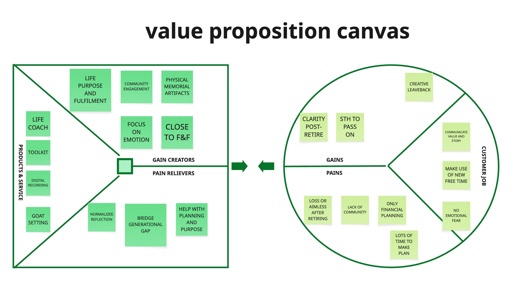
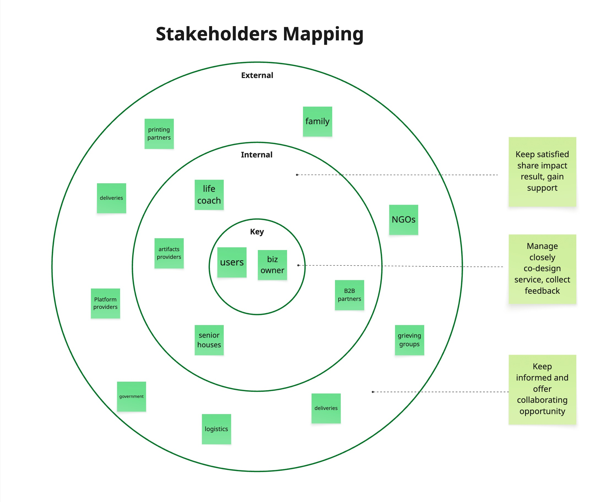
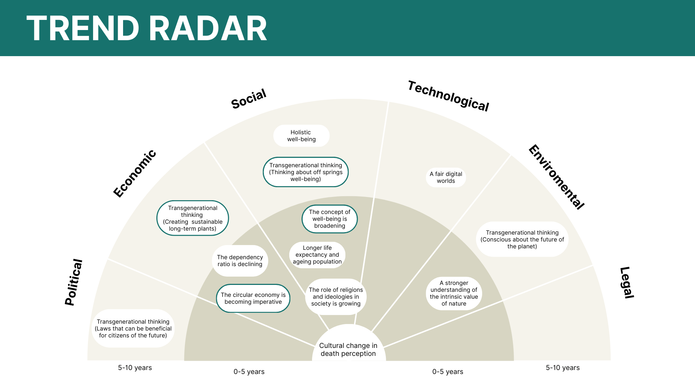
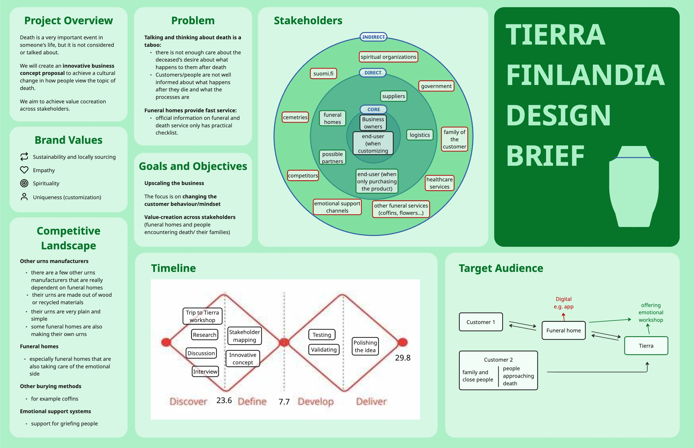
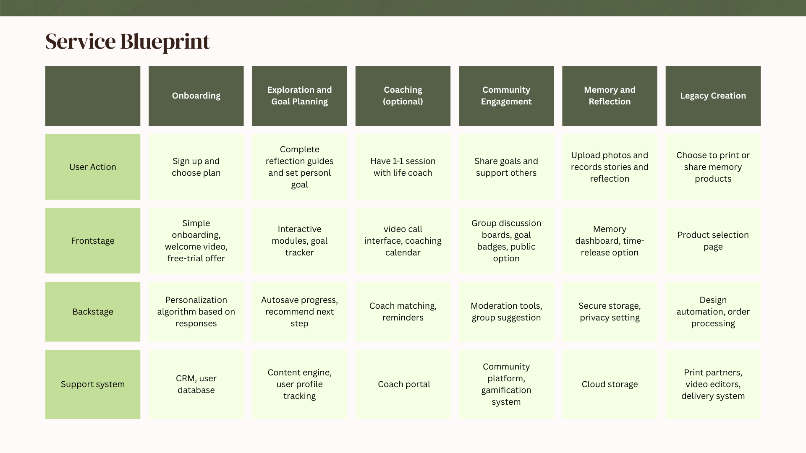
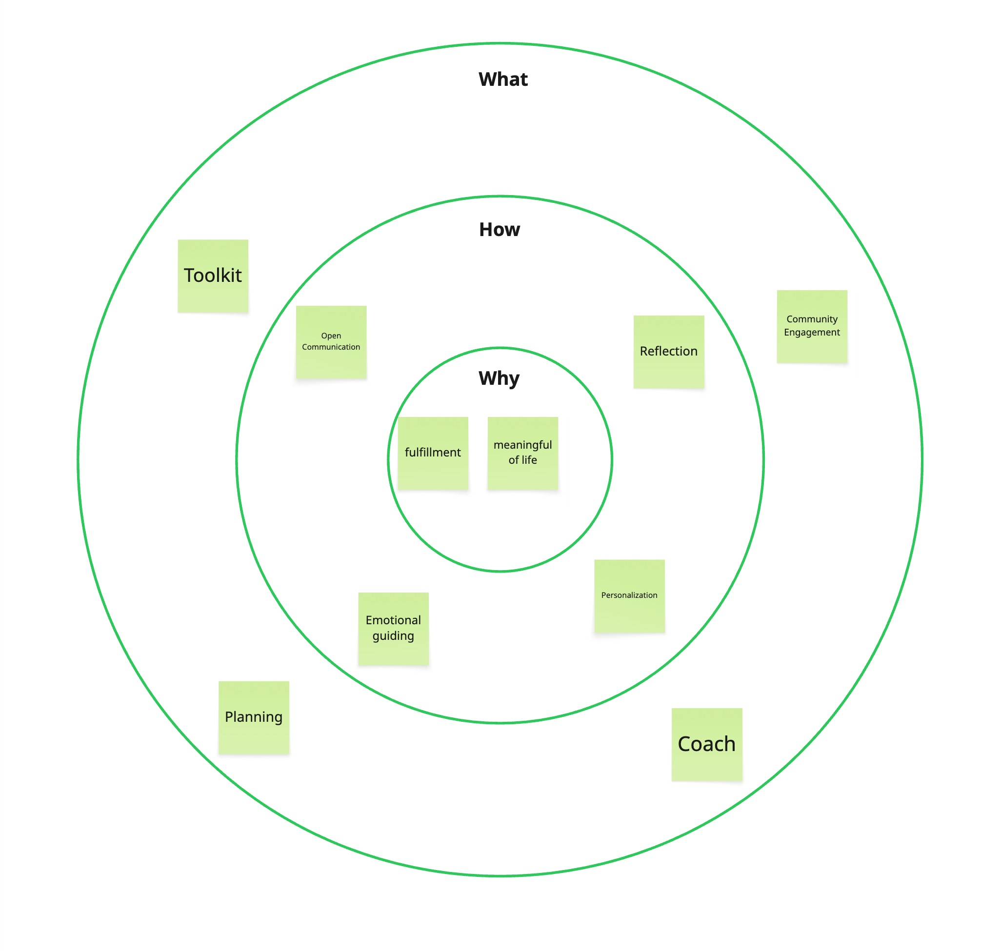
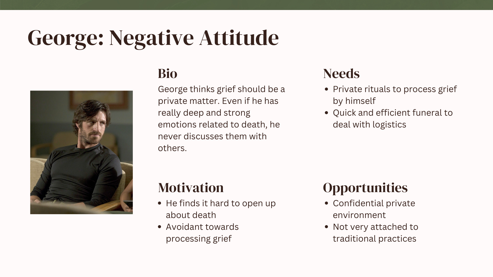
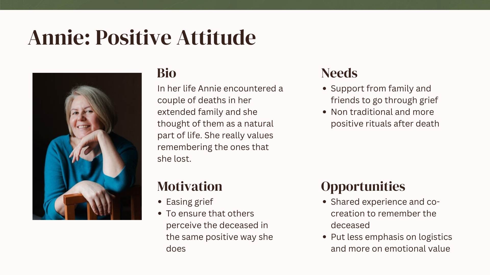